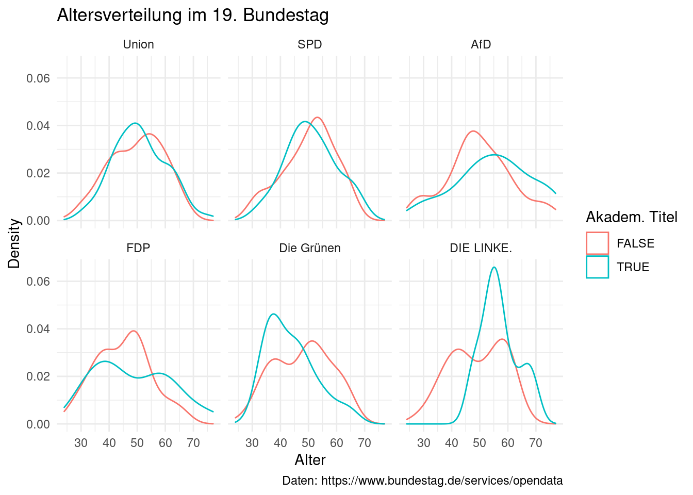

4 Graphische Analyse mit ggplot2
Wir arbeiten in diesem Kapitel mit den in Kapitel 3 transformierten Daten weiter. Dazu müssten Sie entweder das Script aus der Vorwoche nochmals durchführen, den unten stehenden code Block, welcher alle Veränderungen an den Daten in kompakter Form enthält ausführen, oder sie laden die Daten – vorausgesetzt Sie haben sie gespeichert. Vor dem Laden der Daten müssen wir erneut das tidyverse laden.
library(tidyverse)
load("stammdaten_17_19.RData")
stammdaten_19 <- stammdaten_17_19 %>%
filter(wp == 19) %>%
rename(titel = Titel) %>%
mutate(titel_dummy = if_else(!is.na(titel), TRUE, FALSE),
fraktion = factor(fraktion),
fraktion = fct_infreq(fraktion),
geschlecht = factor(geschlecht)) %>%
select(-c(geb, titel))4.1 ggplot2 syntax
Die graphische Datenanalyse mit dem core tidyverse package ggplot2 folgt einer intuitiven Logik. Jede Grafik beginnt mit dem Initieren eines leeren plots. Diese leere “Leinwand” füllen wir dann in weiteren Schritten mit den darzustellenden graphischen Elementen.
Zum Initieren des plots nutzen wir die Funktion ggplot() – auch wenn der Name
des packages ggplot2 lautet, trägt der Funktionsname keine “2”. Der Funktion
geben wir das Datenobjekt welches geplottet werden soll als Argument.
ggplot(data = stammdaten_19)
Die neu erstellte Grafik öffnet sich im “Plots” Tab von RStudio und erstrahlt in blendender Leere, da wir noch keine graphischen Elemente hinzugefügt haben.
4.1.1 geoms & aesthetics
Diese graphischen Element werden geoms genannt. Wir fügen Sie einem plot hinzu
indem wir nach ggplot() ein + schreiben und den Befehl für das geom in der
nächsten Zeile eingeben. Weitere geoms können wir auf die selbe Art und Weise
hinzufügen. Die grundsätzliche Syntax – dies ist kein ausführbarer Code –
sieht damit wie folgt aus:
ggplot(data = ...) +
geom_1() +
geom_2() +
...Die geom Funktionen beginnen immer mit geom_ und enden mit einem Wort das die
Art des graphischen Objekts beschreibt. Beispielsweise geom_point() für
scatterplots, geom_line() für lineplots oder geom_bar() für barplots.
Die aesthetics eines geoms dienen zur Zuordnung der x und y Variablen die in das Koordinatensytem geplottet werden sollen. Darüber hinaus können aesthetics auch genutzt werden um die graphische Darstellung der geplottet Elemente anhand der Werte einer weiteren Variable zu manipulieren – beispielsweise die Farbe oder Größe geplotteter Punkte oder die Dicke von Linien. Dies klingt noch sehr abstrakt, wird aber in späteren Beispielen deutlich werden.
Betrachten wir zunächst, wie die Zuordnung von x und y Variablen syntaktisch
funktioniert. Diese müssen festgelegt werden. Alle weiteren aesthetics sind
optional. Zur Definition der aesthetics nutzen wir die Funktion aes() als ein
Argument der jeweiligen geom Funktion. Innerhalb von aes() weisen wir x und
y die Variablen die auf der x-Achse beziehungsweise der y-Achse abgetragen
werden sollen zu. Die Syntax sieht wie folgt aus:
ggplot(data = ...) +
geom_1(aes(x = x_variable, y = y_variable)) +
geom_2(aes(x = x_variable, y = y_variable)) +
...Nutzen wir die selben x und y Variablen für alle geoms, können wir die
Zuordnung auch direkt in der Funktion ggplot() vornehmen.
ggplot(data = ..., aes(x = x_variable, y = y_variable)) +
geom_1() +
geom_2() +
...Dies ist die grundsätzliche Syntax von ggplot2. Im Folgenden nutzen wir das package zur graphischen Analyse unserer Beispieldaten. Dabei betrachten wir nur einen Teil der verfügbaren geoms und der Möglichkeiten die Darstellung über die aesthetics und weitere Optionen zu manipluieren. Als Übersicht über alle verfügbaren geoms empfehle ich dringend das cheatsheet für ggplot2: https://raw.githubusercontent.com/rstudio/cheatsheets/master/data-visualization.pdf Eine ausführlichere Einführung gibt das Kapitel “Data visualisation” in “R for Data Science”: https://r4ds.had.co.nz/data-visualisation.html
4.2 Graphische Analyse der Stammdaten
Variablen sind kontinuierlich, wenn sie jeden Wert – möglicherweise im Minimum und Maximum begrenzt – annehmen können. Sie sind auch immer numerisch. Ein in den Sozialwissenschaften häufig anzutreffendes Beispiel für eine kontinuierliche Variable wäre das Einkommen beziehungsweise monetäre Werte im Allgemeinen, vorausgesetzt sie werden als exakter Geldwert gemessen. In unserem Beispielsdatensatz ist das Alter der MdBs eine kontinuierliche Variable.
Variablen sind kategorial, wenn Sie als Werte nur eine begrenzte Anzahl vordefinierter Kategorien annehmen können. Wird das Einkommen statt als exakter Wert als Mitgliedschaft in breiten Einkommensgruppen gemessen, ist dies eine kategoriale Variable. In den Beispieldaten sind die Fraktionsmitgliedschaft, das Geschlecht sowie die Dummyvariable zum akademischen Titel kategoriale Variablen.
Geoms können danach unterschieden werden, für welche Typen von x und y Variablen sie anwendbar sind. Dieser Logik folgt auch das oben verlinkte cheatsheet.
4.2.1 kontinuierliches x & y
Das Alter ist die einzige kontinuierliche Variable in unserem Beispielsdatensatz. Damit eignet sich der Beispieldatensatz nicht zum Plotten zweier kontinuierlicher Variablen. Stattdessen, generieren wir im folgenden Zufallssaten für Mietpreise und Quadratmeter fiktiver Wohnungen in einer Stadt.
Bevor wir nun Zufallswerte generieren, müssen wir uns über eines bewusst sein:
Zufallswerte sind Zufallswerte. Bei jeder wiederholten Ziehung der
Zufallswerte, werden wir andere Werte erhalten. Meist sind wir aber daran
interessiert, auch zufällig gezogene Werte reproduzieren zu können. Also bei
jeder wiederholten Ziehung, beispielsweise wenn wir am nächsten Tag an einem
Projekt weiterarbeiten, dieselben Zufallswerte zu erhalten. Dies können wir
ermöglichen, in dem wir vor dem Ziehen der Zahlen einen sogenannten Seed
setzen. Dieser Seed legt den Startpunkt des Random Number Generators (RNG)
fest. Dieser Startpunkt bestimmt, welche Zahlen in welcher Reihenfolge zufällig
generiert werden und sicher die Reproduzierbarkeit unserer Arbeit. Die Funktion
set.seed(), mit einer beliebigen Zahl zwischen den Klammern – hier das Datum
der Seminarsitzung – setzt den Seed.
Der folgende Codeblock generiert unsere Zufallsdaten als eine Tibble. Die Spalte
“size” enthält 1000 Zufallswerte aus einer Normalverteilung mit einem Mittelwert
von 70 und einer Standardabweichung von 15. Dies sind die Quadratmeterzahlen
unser fiktiver Wohnungen. Für die Spalte “premium” werden 1000 Werte aus der
Binomialverteilung gezogen. Mit einer Wahrscheinlichkeit von 20% ist der Wert
TRUE, mit 80% FALSE. Die Variable soll einige Wohnungen zufällig als
besonders teuer kennzeichnen – möglicherweise aufgrund ihrer exklusiven Lage.
Auf Basis der Werte von “size” und “premium”, berechnet sich der Mitpreis in
“price” wie folgt: Ausgehend von einer fiktiven Quadratmetermiete von 10€, wird
zunächst etwas “Rauschen” hinzugefügt (Addition/Subtraktion von Werten aus einer
Normalverteilung mit einem Mittelwert von 0 und einer Standardabweichung von 3).
Handelt es sich um eine “Premiumwohnung”, werden auf diesen Preis nochmals 10€
aufgeschlagen. Nun wird der Quadratmeterpreis mit der Größe der Wohnung
multipliziert um den finalen Mietpreis zu berechnen.
set.seed(170522)
rent <- tibble(
size = rnorm(1000, mean = 70, sd = 15),
premium = as.logical(rbinom(n = 1000, size = 1, prob = 0.2)),
price = size * (10 + rnorm(1000, mean = 0, sd = 3) + (10 * premium))
)
rent %>%
head(n = 5)
## # A tibble: 5 × 3
## size premium price
## <dbl> <lgl> <dbl>
## 1 77.2 TRUE 1473.
## 2 66.1 FALSE 574.
## 3 56.4 FALSE 801.
## 4 90.7 TRUE 2290.
## 5 59.8 TRUE 1197.Nun können wir unsere Zufallsdaten plotten. Typischerweise wird die erklärende
unabhängige Variable, hier size, auf der x-Achse und die zu erklärende
abhängige Variable, price, auf der y-Achse abgetragen. Mit geom_point() können wir
einen scatterplot erstellen um die Kombinationen der Werte für x- und y-Variablen
als Punkte in einem Koordinatensystem darzustellen.
ggplot(data = rent, aes(x = size, y = price)) +
geom_point()Da wir die Daten selbst generiert haben, wissen wir bereits, dass x- und
y-Variable positiv miteinander korreliert sind. Auch ohne dieses Wissen, würde
uns ein erster Blick auf die Punktewolke vermutlich einen positiven linearen
Zusammenhang vermuten lassen. Um diese Vermutung zu überprüfen, könnten wir eine
lineare Regressionsgerade in den Plot legen. Diese visualisiert den Zusammenhang
zwischen zwei Variablen und wird so über die Daten gelegt, dass Sie deren
Zusammenhang bestmöglichst beschreibt, also die Abweichung von den
tatsächlichen Daten minimiert. Eine Regressionsgerade erhalten wir, indem wir
dem Plot das geom_smooth() hinzufügen und dabei das Argument method = "lm"
setzen. “lm” steht dabei für “linear model”, also eine lineare Regression. Das
weitere Argument se = FALSE sorgt dafür, dass kein Konfidenzinterval – ein
Maß für die Unsicherheit des geschätzten Zusammenhangs – um die Gerade
angezeigt wird.
ggplot(data = rent, aes(x = size, y = price)) +
geom_point() +
geom_smooth(method = 'lm', se = FALSE)
## `geom_smooth()` using formula 'y ~ x'Der Winkel in dem die Regressionsgerade verläuft – die slope – zeigt uns den Zusammenhang zwischen beiden Variablen an, welcher hier klar positiv ist.
Wir haben die Zufallsdaten so konstruiert, dass es eine Klasse von Wohnungen
gibt, welche besonders teuer sind. Die Korrelation zwischen Größe und Preis
unterscheidet sich also zwischen diesen Gruppen. Dies können wir in unserem Plot
visualisieren in dem wir die Variable premium nutzen um die Daten zu gruppieren
und sowohl Punkte als auch Regressionsgeraden getrennt nach dem Wert der dritten
Variable abzutragen. Zur Gruppierung legen wir eine weitere aesthetic fest.
Dazu könnten wir das Argument group = premium setzen. Um Punkte und Geraden
auch farblich abzugrenzen, bietet sich aber colour = premium an.
ggplot(data = rent, aes(x = size, y = price, colour = premium)) +
geom_point() +
geom_smooth(method = 'lm', se = FALSE)
## `geom_smooth()` using formula 'y ~ x'Wir sehen klar, dass sich die Slope beider Geraden unterscheidet. Die Korrelation zwischen Größe und Preis ist für Premiumwohnungen stärker.
Sidenote: In diesem Fall haben wir die Daten selbst konstruiert und waren uns über die Zusammenhänge der Variablen im Vorfeld bewusst. Die Zusammenhänge in echten Daten kennen wir nicht, wir können aber basiert auf theoretischen Überlegungen Annahmen zu Zusammenhängen treffen und diese, unter anderem, mit vergleichbaren graphischen Analysen überprüfen.
4.2.2 kategoriales x, kontinuierliches y
In Kapitel 3 haben wir mit summarise() und group_by() die Anzahl
von Beobachtungen pro Fraktion berechnet. Diese könnten wir auch in einer Graphik
darstellen. Die Variable zur Fraktionsmitgliedschaft ist dabei eine kategoriale
Variable, die Anzahl der Abgeordneten ist kontinuierlich, liegt aber nicht als
Variable vor. Dies benötigen wir aber auch nicht, da geom_bar() – für
barplots – die Anzahl von Beobachtungen pro Kategorie der x Variable
automatisch berechnet. So müssen wir in den aesthetics auch nur die x Variable
zuordnen.
stammdaten_19 %>%
ggplot(aes(x = fraktion)) +
geom_bar()So schnell und einfach kommen wir zu einem barplot der Fraktionsmitgliedschaft. Die
Darstellung ist dabei aber nicht sonderlich hübsch. Ein erster Schritt wäre es,
die Achsen sowie die Graphik selbst sinnvoll zu beschriften. die Funktion
labs() erlaubt die Benennung der zentralen Graphikbestandteile,
beispielsweise:
stammdaten_19 %>%
ggplot(aes(x = fraktion)) +
geom_bar() +
labs(x = "Fraktion",
y = "Mandate",
title = "Anzahl Mandate im 19. Bundestag nach Fraktionszugehörigkeit",
caption = "Daten: https://www.bundestag.de/services/opendata")Soweit, so gut. Aber die Balken sind doch noch sehr eintönig grau. In der
aes() Funktion innerhalb von geom_bar() oder auch ggplot(), können wir
über das fill = Argument festlegen, dass die Balken nach dem Wert einer
Variable eingefärbt werden sollen. Setzen wir dieses gleich der Variable
“fraktion”, bekommt jeder Balken eine eigene Farbe zugewiesen. Die automatisch
erstellte Farblegende, verstecken wir mit einem weiteren Argument.
stammdaten_19 %>%
ggplot(aes(x = fraktion)) +
geom_bar(aes(fill = fraktion), show.legend = FALSE) +
labs(x = "Fraktion",
y = "Mandate",
title = "Anzahl Mandate im 19. Bundestag nach Fraktionszugehörigkeit",
caption = "Daten: https://www.bundestag.de/services/opendata")Noch schöner wäre es, wenn die Balkenfarben mit den tatsächlichen Parteifarben
übereinstimmen würden. Dazu können wir die Farben der Balken per Hand festlegen
statt sie automatisch zuweisen zu lassen. Hier erstellen wir einen Vektor mit
Farbnamen den wir dann für das fill = Argument nutzen. Beachten Sie dabei,
dass fill = diesmal nicht innerhalb von aes() steht. Dies liegt daran, dass
wir die Farben nicht anhand einer Variable festlegen sondern konstant zuweisen,
was außerhalb von aes() erfolgt.
parteifarben <- c("black", "red", "deepskyblue", "yellow2", "limegreen", "violetred", "grey")
stammdaten_19 %>%
ggplot(aes(x = fraktion)) +
geom_bar(fill = parteifarben) +
labs(x = "Fraktion",
y = "Mandate",
title = "Anzahl Mandate im 19. Bundestag nach Fraktionszugehörigkeit",
caption = "Daten: https://www.bundestag.de/services/opendata")Eine Übersicht über alle verfügbaren Farben, finden Sie unter: http://www.stat.columbia.edu/~tzheng/files/Rcolor.pdf
Mich persönlich stört an dieser Stelle noch der graue Hintergrund des plots.
Dieser ist Teil des standard themes von ggplot2, theme_gray(). Wir
können aber auch andere themes auswählen. Eine Übersicht finden sie hier:
https://ggplot2.tidyverse.org/reference/ggtheme.html
stammdaten_19 %>%
ggplot(aes(x = fraktion)) +
geom_bar(fill = parteifarben) +
labs(x = "Fraktion",
y = "Mandate",
title = "Anzahl Mandate im 19. Bundestag nach Fraktionszugehörigkeit",
caption = "Daten: https://www.bundestag.de/services/opendata") +
theme_minimal()Nutzen wir für die fill aesthetic eine zweite Variable, beispielsweise die
Informationen zu akademischen Titeln, erhalten wir einen gestapelten barplot.
Hier macht es wiederum Sinn, die automatisch erstellte Farblegende nicht
auszublenden.
stammdaten_19 %>%
ggplot(aes(x = fraktion)) +
geom_bar(aes(fill = titel_dummy)) +
labs(x = "Fraktion",
y = "Mandate",
title = "Anzahl Mandate mit/ohne Titel im 19. Bundestag nach Fraktionszugehörigkeit",
caption = "Daten: https://www.bundestag.de/services/opendata") +
theme_minimal()Möchten wir die Balken nicht stapeln sondern nebeneinander darstellen, können
wir dies über das Argument position = "dodge" festlegen. Um die Darstellung
weiter aufzuhübschen können wir außerdem den Titel der Farblegende in labs()
anpassen.
stammdaten_19 %>%
ggplot(aes(x = fraktion)) +
geom_bar(aes(fill = titel_dummy), position = "dodge") +
labs(x = "Fraktion",
y = "Mandate",
title = "Anzahl Mandate mit/ohne Titel im 19. Bundestag nach Fraktionszugehörigkeit",
caption = "Daten: https://www.bundestag.de/services/opendata",
fill = "Akadem. Titel") +
theme_minimal()4.2.3 kontinuierliches x
In Kapitel 3 haben wir deskriptive Statistiken zur Altersverteilung
berechnet. Auch diese können wir graphisch darstellen. Dazu bietet sich unter
anderem geom_histogram() an. Ein Histogramm unterteilt eine kontinuierliche
Variable in eine festlegbare Anzahl von Abschnitten – bins – und stellt
die Anzahl von Beobachtungen die in jedes bin fallen als Balken dar. Als
Standard unterteilt ggplot2 eine Variable in 30 bins, dies können wir aber
über das bins = Argument beeinflussen.
stammdaten_19 %>%
ggplot(aes(x = alter)) +
geom_histogram() +
labs(x = "Alter",
y = "Anzahl",
title = "Altersverteilung im 19. Bundestag",
caption = "Daten: https://www.bundestag.de/services/opendata") +
theme_minimal()
## `stat_bin()` using `bins = 30`. Pick better value with `binwidth`.Um die Grafik besser interpretierbar zu machen, könnten wir eine vertikale Linie
hinzufügen die den Mittelwert der x Variable markiert. Dazu nutzen wir
geom_vline() und legen für xintercept = den x Wert fest, an dem die Linie
eingezeichnet werden soll. Außerdem scheint es angebracht, die Anzahl der bins
zu reduzieren. Mit 30 bins, deckt jeder Balken knapp 2 Jahre ab. So werden
zufällige Fluktuationen in der Altersverteilung überbetont.
stammdaten_19 %>%
ggplot(aes(x = alter)) +
geom_histogram(bins = 15) +
geom_vline(aes(xintercept = mean(alter)), colour = "red") +
labs(x = "Alter",
y = "Anzahl",
title = "Altersverteilung im 19. Bundestag",
caption = "Daten: https://www.bundestag.de/services/opendata") +
theme_minimal()Wir sehen, dass die Alterstruktur annäherend um den Mittelwert normalverteilt ist, die Verteilung aber leicht links-schief ist. Das bedeutet, dass die Verteilung auf der linken Seite etwas langsamer ansteigt als die auf der rechten abnimmt. Dies ist hier vor allem mit dem starken Abfall von Mandatsträgern beim Erreichen des Rentenalters erklärbar.
Durch das Verringern der bins auf 15 – jeder bin deckt so 3-4 Jahre ab –, erscheint die Altersverteilung deutlich näher an einer Normalverteilung, da Fluktuationen in der Altersverteilung so weniger betont werden. Wenn es unser Ziel ist, die generelle Altersverteilung im Bundestag zu bewerten, macht dieser Ansatz aus meiner Sicht auch durchaus Sinn. Wir sollten aber davon absehen, solange an der “bins-Schraube” zu drehen, bis wir ein Bild bekommen, dass uns gefällt. Vielmehr sollten wir vor dem plotten darüber nachdenken, was das Ziel der graphischen Darstellung ist und die bins entsprechend festlegen.
Möchten wir die Histogramme für alle Fraktionen vergleichen, können wir facets
nutzen. Dabei werden in einem plot mehrere einzelne plots neben- und
untereinander dargestellt. In der Funktion facet_wrap() schreiben wir dazu
den Namen der Variable nachdem die Kacheln gebildet werden sollen und setzen
davor eine Tilde ~.
stammdaten_19 %>%
ggplot(aes(x = alter)) +
geom_histogram(bins = 15) +
facet_wrap(~ fraktion) +
labs(x = "Alter",
y = "Anzahl",
title = "Altersverteilung im 19. Bundestag nach Fraktion",
caption = "Daten: https://www.bundestag.de/services/opendata") +
theme_minimal()
Um dies besser interpretierbar zu machen, könnten wir die Mittelwerte des Alters
für jede Fraktion einzeichnen. Diese müssen wir dazu zunächst pro Fraktion berechen.
Dazu nutzen wir wiederum die dplyr Funktionen und hängen ggplot() am Ende der
Pipe an. In diesem Zuge, können wir auch die Fraktionslosen herausfiltern, da ihre
Anzahl für eine inhaltliche Interpretation deutlich zu klein ist.
stammdaten_19 %>%
filter(fraktion != "Flos") %>%
group_by(fraktion) %>%
mutate(arith_mittel = mean(alter)) %>%
ungroup() %>%
ggplot(aes(x = alter)) +
geom_histogram(bins = 15) +
geom_vline(aes(xintercept = arith_mittel), colour = "red") +
facet_wrap(~ fraktion) +
labs(x = "Alter",
y = "Anzahl",
title = "Altersverteilung im 19. Bundestag nach Fraktion",
caption = "Daten: https://www.bundestag.de/services/opendata") +
theme_minimal()Die Befunde aus Kapitel 3 lassen sich zunächst bestätigen. Der relativ hohe Mittelwert der AfD wird durch viele besonders alte Mandatsträger:innen etwas nach oben verschoben. Keine andere Fraktion hat so “viele” – es geht hier eigentlich um eine geringe Anzahl von Personen – Abgeordnete über 70. FDP und Grüne als die im Mittelwert jüngsten Fraktionen unterscheiden sich in Ihrer Altersspannweite. Die FDP hat viele sehr junge aber auch sehr alte MdBs, während die Spannweite bei den Grünen deutlich enger ist. Wir erkennen nun auch, dass die Altersverteilung in der Union relativ nahe an der generellen Altersverteilung des 19. Bundestags liegt. Interessant sind die Verteilungen von SPD und von DIE LINKE. Anders als die alleinige Betrachtung des Mittelwerts suggeriert, liegt der Schwerpunkt der Altersverteilung in beiden Fraktionen bei den über 50-jährigen. Es gilt zu erinnern, dass die Histogramme für die kleineren Fraktionen auf wenig Fällen basieren. Die Fluktuationen zwischen den bins sollten deshalb nicht überinterpretiert werden.
Eine Alternative zu Histogrammen sind density plots. Diese können wir als geglätte Version eines Histogramms verstehen. Statt abgesteckter bins, für welche jeweils die Anzahl Beobachtungen die in dieses Interval der x Variable fallen exakt gezählt werden, wird bei einem density plot die “Dichte” der Daten über alle x Werte hinweg geschätzt. Diese Dichte wird auf der y-Achse abgetragen und summiert sich zu 1 auf. Dabei werden Fluktuationen in der Verteilung weniger detailliert abgebildet, aber wie bekommen dafür ein klareres Bild der generellen Verteilung einer kontinuierlichen Variable. Zwei weitere Vorteile sind, dass wir für density plots keine Entscheidungen zur Größe beziehungsweise Anzahl der bins treffen müssen und diese sich besser zum übereinanderlegen eignen als Histogramme.
So könnten wir beispielsweise die in Kapitel 3 bereits angesprochene
Altersverteilung für Träger akademischer Titel und Personen ohne einen Titel in
zwei übereinandergelegten density plots gleichzeitig betrachten und vergleichen.
Dazu plotten wir mit geom_density() und nutzen entweder die fill oder
colour aesthetic. Bei fill wird die Fläche unter der Kurve gefüllt, bei
colour werden nur die Kurven farblich gezeichnet.
stammdaten_19 %>%
ggplot(aes(x = alter, colour = titel_dummy)) +
geom_density() +
labs(x = "Alter",
y = "Density",
title = "Altersverteilung im 19. Bundestag",
caption = "Daten: https://www.bundestag.de/services/opendata",
colour = "Akadem. Titel") +
theme_minimal()Beide Verteilungen sind sich relativ ähnlich, bei den Titelträgern gibt es aber einen höheren Anteil besonders alter MdBs. Wir haben auch bereits gesehen, dass es möglicherweise Unterschiede zwischen den Fraktionen gibt. Diese können wir erneut mit einem facet vergleichen. Dazu filtern wir zunächst die Fraktionslosen heraus, da durch ihre geringe Anzahl nicht genug Daten zur Verfügung stehen um belastbare Ergebnisse zur Verteilung zu berechnen.
stammdaten_19 %>%
filter(fraktion != "Flos") %>%
ggplot(aes(x = alter, colour = titel_dummy)) +
geom_density() +
facet_wrap(~ fraktion) +
labs(x = "Alter",
y = "Density",
title = "Altersverteilung im 19. Bundestag",
caption = "Daten: https://www.bundestag.de/services/opendata",
colour = "Akadem. Titel") +
theme_minimal()
Die plots bestätigen die Ergebnisse aus Kapitel 3 weitestgehend. Union und SPD Mandatsträger mit und ohne Titel sind in der Altersverteilung sehr ähnlich. In AfD und LINKE sind Träger akademischer Titel klar älter. Bei den GRÜNEN klar jünger. Bei der FDP ist das Bild etwas differenzierter. Während Mandatsträger ohne Titel vornehmlich jüngeren bis mittleren Alters sind, ist die Alterverteilung bei Titelträgern relativ gleich über alle Alter hinweg.
4.3 Graphiken exportieren
Nachdem wir nun einige schöne Graphiken erstellt haben, folgt die Frage, wie
wie diese in unsere Papers und Hausarbeiten einbinden können. Arbeiten wir in
R Markdown, können wir direkt den ggplot2 Output nutzen, arbeiten wir aber
in externer Software – z. B. Word oder LaTeX – müssen wir die Graphiken
exportieren. Ein einfacher Weg ist die Funktion ggsave().
Um die letzte erstelle Graphik abzuspeichern, müssen wir ggsave() nur einen
Dateinamen beziehungsweise Pfad als Argument mitgeben. Das Format der Graphik
legen wir dabei einfach über die Dateiendung fest. Ich empfehle generell eine
Vektorgraphik zu nutzen – beispielsweise “.eps” oder “.svg”. Der Vorteil ist,
dass diese stufenlos skalierbar sind. Wir können die Größe der Graphik beim
Import also in beide Richtungen anpassen, ohne dass die Darstellungsqualität
leidet. Pixelbasierte Formate wie “.jpeg” oder “.png” sind bereits komprimiert
und verlieren dadruch an Qualität. Möchten wir diese vergrößern, wird die
Darstellung zunehmend verschwommen. Das Verkleinern funktioniert eventuell
besser, kann aber auch graphische Artefakte erzeugen.
Hier speichern wir die letzte erstellte Graphik – die density plots nach Fraktionen – als “.eps”.
ggsave("age_density_by_party.eps")
## Saving 7 x 5 in imageFlexibler einsetzen lässt sich sich ggsave() wenn wir plots zunächst einem
Objekt zuweisen. So ist es nicht mehr notwendig direkt nach der Erstellung einer
Graphik den Export vorzunehmen. Hier erstellen wir zwei Graphiken und weisen
diese zunächst Objekten zu, um sie später abzuspeichern. Durch die
Objektzuweisung bekommen wir dabei keinen Output. Ich würde empfehlen zunächst
die Graphik zu gestalten bis das Endergebnis erreicht ist und die Objektzuweisung
erst dann hinzuzufügen. Die erstellten Graphiken exportieren wir am Ende des
Blocks. Dabei handelt es sich um den barplot der Abgeordneten nach Fraktionen.
Einmal wie oben als Version mit den Parteifarben, einmal als greyscale Variante,
welche sich besser zum Druck eignet. Dazu fügen wir scale_fill_grey() hinzu.
mdb_partei_colour <- stammdaten_19 %>%
ggplot(aes(x = fraktion)) +
geom_bar(fill = parteifarben) +
labs(x = "Fraktion",
y = "Mandate",
title = "Anzahl Mandate im 19. Bundestag nach Fraktionszugehörigkeit",
caption = "Daten: https://www.bundestag.de/services/opendata") +
theme_minimal()
mdb_partei_grey <- stammdaten_19 %>%
ggplot(aes(x = fraktion)) +
geom_bar(aes(fill = fraktion)) +
labs(x = "Fraktion",
y = "Mandate",
title = "Anzahl Mandate im 19. Bundestag nach Fraktionszugehörigkeit",
caption = "Daten: https://www.bundestag.de/services/opendata") +
scale_fill_grey()
ggsave("mdb_party_colour.eps", plot = mdb_partei_colour)
## Saving 7 x 5 in image
ggsave("mdb_party_grey.eps", plot = mdb_partei_grey)
## Saving 7 x 5 in imageWir können für ggsave() noch weitere Argumente festlegen. Zum Beispiel um die
Größe und Auflösung der Graphik einzustellen. Diese sind vor allem interessant,
wenn wir uns für das Speichern in einem pixelbasierten Format entscheiden. Für
mehr Informationen betrachten Sie bitte ?ggsave().